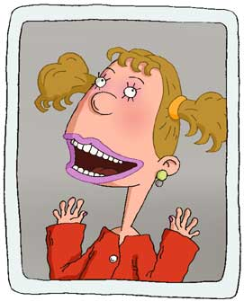

|
 |
The ultimate chatterbox and recycled gossip authority, Dodie has been Ginger's best friend since the day they met.
With the latest gossip always on hand, Dodie may be the most desperate for popularity and for that reason the least likely to get it.
It's her constant bulletins and updates that have kept Ginger current throughout the years and Ginger is grateful.
Dodie is entirely informed on all social matters: like the major contenders in the race for popularity.
Dodie knows the name and vitals of each and every pupil at Lucky Junior High and can tell you the exact shade of lipstick that each of the "It Girls" dons and why it does or doesn't work for them.
Dodie is obsessed with the sleep-over party genre and is constantly trying to throw the sleep-over to end all others.
Dodie is somewhat of a drama queen.
|